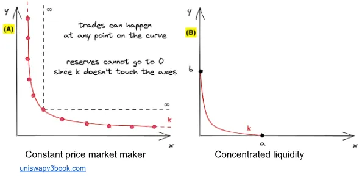
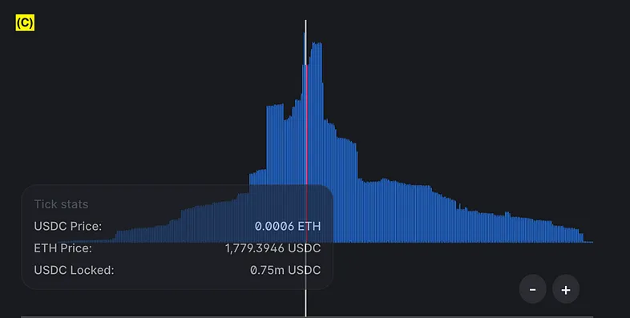
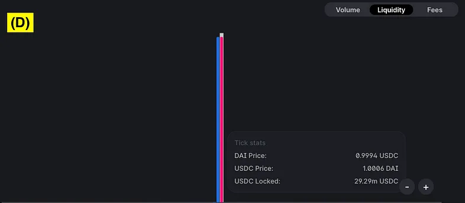
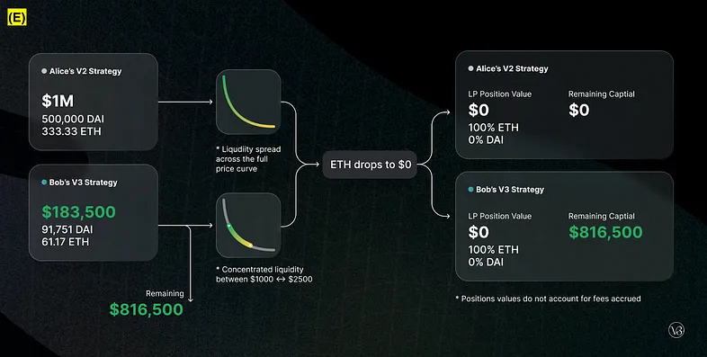
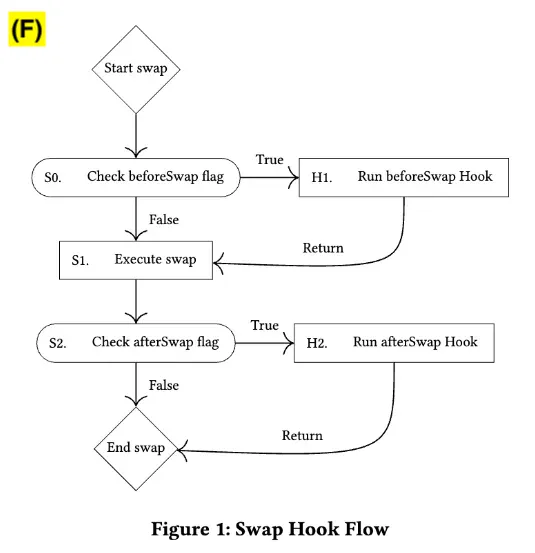

>> Uniswap Overview
Hello WEB3, In this blog series, we are going to look overview of 4 versions of Uniswap protocola. It is a decentralized exchange (DEX) protocol built on the Ethereum blockchain, enabling users to trade cryptocurrencies directly from their wallets without intermediaries. Each version of Uniswap has introduced significant improvements and innovations. Here's an in-depth overview of Uniswap v1, v2, v3, and the upcoming v4.
You can see my uniswap-v2 code walk-through blog page, which makes clear to understand the Uniswap-V2 protocol.
>> Uniswap-V1
Uniswap V1 is the first version of the protocol, launched in November 2018 at Devcon 4. Uniswap v1 introduced the constant product market maker model, where each liquidity pool is a pair of ERC-20 tokens. The product of the quantities of the two tokens remains constant (x * y = k), which defines the price.
>> V1 Features
- Add support for any ERC20 token using the Uniswap factory
- Join liquidity pools to collect fees on ETH-ERC20 pairs
- Liquidity-sensitive automated pricing using constant product formula
- Trade ETH for any ERC20 without wrapping
- Trade any ERC20 for any ERC20 in a single transaction
- Trade and transfer to a different address in a single transaction
- Lowest gas cost of any decentralized exchange
- Support for private and custom uniswap exchanges
- Buy ERC20 tokens from any wallet using ENS
- Partially verified smart contracts written in Vyper
- Mobile-optimized open source frontend implementation
>> How it works
Uniswap is made up of a series of ETH-ERC20 exchange contracts. There is exactly one exchange contract per ERC20 token. If a token does not yet have an exchange it can be created by anyone using the Uniswap factory contract. The factory serves as a public registry and is used to look up all token and exchange addresses added to the system.
Each exchange holds reserves of both ETH and its associated ERC20 token. Anyone can become a liquidity provider on an exchange and contribute to its reserves. This is different than buying or selling; it requires depositing an equivalent value of both ETH and the relevant ERC20 token. Liquidity is pooled across all providers and an internal "pool token" (ERC20) is used to track each providers relative contribution. Pool tokens are minted when liquidity is deposited into the system and can be burned at any time to withdraw a proportional share of the reserves.
Exchange contracts are automated market makers between an ETH-ERC20 pair. Traders can swap between the two in either direction by adding to the liquidity reserve of one and withdrawing from the reserve of the other. Since ETH is a common pair for all ERC20 exchanges, it can be used as an intermediary allowing direct ERC20-ERC20 trades in a single transaction. Users can specify a recipient address if they want to receive purchased tokens at a different address from the one used to make a transaction.
Uniswap uses a "constant product" market making formula which sets the exchange rate based off of the relative size of the ETH and ERC20 reserves, and the amount with which an incoming trade shifts this ratio. Selling ETH for ERC20 tokens increases the size of the ETH reserve and decreases the size of the ERC20 reserve. This shifts the reserve ratio, increasing the ERC20 token's price relative to ETH for subsequent transactions. The larger a trade relative to the total size of the reserves, the more price slippage will occur. Essentially, exchange contracts use the open financial market to decide on the relative value of a pair and uses that as a market making strategy.
A small liquidity provider fee (0.30%) is taken out of each trade and added to the reserves. While the ETH-ERC20 reserve ratio is constantly shifting, fees makes sure that the total combined reserve size increases with every trade. This functions as a payout to liquidity providers that is collected when they burn their pool tokens to withdraw their portion of total reserves. Guaranteed arbitrage opportunities from price fluctuations should push a steady flow of transactions through the system and increase the amount of fee revenue generated.
Since Uniswap is entirely on-chain, prices can change between when a transaction is signed and when it is included in a block. Traders can bound price fluctuations by specifying the minimum amount bought on sell orders, or the maximum amount sold on buy orders. This acts as a limit order that will automatically cancel if it is not filled. It is also possible to set transaction deadlines which will cancel orders if they are not executed fast enough.
The reason only one exchange per token can be registered to the factory is to encourage providers to pool their liquidity into a single reserve. However, Uniswap has built in support for ERC20-to-ERC20 trades using the public pools from the factory on one side of the transaction and custom, user-specified pool on the other. Custom pools could have fund managers, use alternate pricing mechanisms, remove liquidity provider fees, integrate complex three dimensional fomo-based ponzi-schemes and more. They just need to implement the Uniswap interface and accept ETH as an intermediary asset. Custom pools do not have the same safety properties as the public ones. It is recommended users only interact with audited, open-source smart contracts.
>> Why we are moving to V2
- Uniswap v1 can simply hacked through price manipulations, front running and sandwich attacks.
- The prices in Uniswap v1 could be easily manipulated within a single block, making it unreliable as a price feed.
- Uniswap v1 only allowed for trading pairs between ERC-20 tokens and ETH. This meant that if users wanted to trade between two ERC-20 tokens, they had to conduct two separate trades (ERC-20 to ETH and then ETH to another ERC-20). This increased transaction costs and complexity.
- Uniswap v1 did not support flash loans or any mechanism to leverage liquidity pools for instant arbitrage opportunities within the same transaction.
- The routing mechanism in Uniswap v1 was basic and often resulted in suboptimal paths for trades, leading to higher slippage and costs.
- The overall functionality of Uniswap v1 was quite basic, and it did not support more advanced use cases or customization.
>> Uniswap-V2
The Uniswap V2 was launched in May, 2020 with a plethora. Uniswap v2 is a new implementation based on the same formula, with several new highlydesirable features. Most significantly, it enables the creation of arbitrary ERC20/ERC20 pairs, rather than supporting only pairs between ERC20 and ETH. It also provides a hardened price oracle that accumulates the relative price of the two assets at the beginning of each block. This allows other contracts on Ethereum to estimate the time-weighted average price for the two assets over arbitrary intervals. Finally, it enables “flash swaps” where users can receive assets freely and use them elsewhere on the chain, only paying for (or returning) those assets at the end of the transaction.
New features including TWAP (Time Weighted Average Price), Liquidity pools for non-native tokens which halves gas fees and slippage for token swaps, and Flash Swaps. In addition, this update removed native token functionality in favor of WETH (Wrapped Ether) and is written in Solidity - a welcome change for readability. The 0.3% fee model was shortly modified after release by members of the DAO, where 0.05% of the fee’s funds are reserved for the development of the Uniswap network.
You can read Uniswap-V2 walk-through blog post written by me.
>> Why we are moving to V3
- In v2, liquidity is spread evenly across the entire price range from 0 to infinity, regardless of actual trading activity. This means a large portion of the liquidity provided by liquidity providers (LPs) is rarely used, leading to inefficient capital usage.
- V2 offers a single fee tier (0.3%) for all trading pairs. This uniform fee structure may not be optimal for different types of trading pairs with varying levels of volatility.
- The evenly distributed liquidity can lead to higher slippage, especially for large trades, as the depth of liquidity at specific price points might be insufficient.
- With concentrated liquidity, the depth of liquidity at specific price points is increased, leading to better price execution and lower slippage for traders.
- LPs have a passive role, providing liquidity across the entire price range without the ability to manage their positions dynamically.
- Liquidity positions are represented as fungible ERC-20 tokens, meaning each LP's contribution is homogenous and cannot be customized.
>> Uniswap-V3
Uniswap v3 is a noncustodial automated market maker implemented for the Ethereum Virtual Machine. In comparison to earlier versions of the protocol, Uniswap v3 provides increased capital efficiency and fine-tuned control to liquidity providers, improves the accuracy and convenience of the price oracle, and has a more flexible fee structure.
>> New features
- Concentrated Liquidity: Liquidity providers (LPs) are given the ability to concentrate their liquidity by “bounding" it within an arbitrary price range. This improves the pool’s capital efficiency and allows LPs to approximate their preferred reserves curve, while still being efficiently aggregated with the rest of the pool.
- Flexible Fees: The swap fee is no longer locked at 0.30%. Rather, the fee tier for each pool (of which there can be multiple per asset pair) is set on initialization. The initially supported fee tiers are 0.05%, 0.30%, and 1%. UNI governance is able to add additional values to this set.
- Protocol Fee Governance: UNI governance has more flexibility in setting the fraction of swap fees collected by the protocol
- Active Liquidity Management: LPs can actively manage their positions by adjusting their price ranges according to market conditions.
- Improved Price Oracle: Uniswap v3 provides a way for users to query recent price accumulator values, thus avoiding the need to checkpoint the accumulator value at the exact beginning and end of the period for which a TWAP is being measured.
- Liquidity Oracle: The contracts expose a time-weighted average liquidity oracle
- Non-Fungible Token (NFT) Liquidity Positions : Each liquidity position is represented as an NFT, providing unique ownership and customizability.
- Automated Fee Compounding : Although not a direct feature of the protocol, integrations and tools can automatically compound fees earned by LPs into their positions.
>> How Concentrated Liquidity works?
The polarizing feature of Uniswap v3 is its concept of concentrated liquidity. In the constant product market maker, that we previously explained, the liquidity of the pool is evenly distributed. When a swap occurs, the asset moves along the curve, changing its x and y coordinates and thus its price. The CPMM curve (see Figure A) does not intersect with either the x or y axes and will therefore never run out of liquidity. The liquidity covers all possible price combinations on the curve: eg: even if ETH/USDC went to $1, there would be some liquidity available.
In contrast, the concentrated liquidity model divides the price points evenly into ‘ticks’. The ticks create price ranges, which contain a finite amount of liquidity (see Figure C). Each price range will have its own price curve, representative of the liquidity available. If you look at the graph below (figure B), you can see that the concentrated liquidity graph does intersect with the x and y axes. These intersections are the upper and lower bound of the price range and once reached, mean that the price range has exhausted its liquidity and contains only 1 of the tokens in the token-pair. If this happens, the next price range will be entered, and there will be new liquidity available.

When adding liquidity to a Uniswap v3 pool, liquidity providers specify the price range they would like to add liquidity. In return for staking, they are no longer given an ERC-20 LP token, but rather an NFT that contains far more information specific to LP’s unique position. An LP can still exit the pool at any time, however, the rewards work slightly differently. There are pool fee tiers, which range from 0.05% to 1%, and determine the rewards paid to the LPs for adding liquidity. However, if the price moves outside the range at which the LP specified, they will stop earning rewards. This means that the Uniswap v3 model requires more of an actively managed approach from LPs who are dealing with volatile tokens. But, when dealing with tokens of very similar value and low volatility, like a USDC/DAI pair, the concentrated liquidity approach makes a lot of sense. USDC and DAI are both pegged to the US Dollar and the price between the two assets should not fluctuate much. Look at Figure D below to see how differently liquidity is allocated to the USDC-DAI pool when compared to the ETH-USDC pool back in Figure C.
The concentrated liquidity model substantially improves capital efficiency, allowing LPs to earn significantly better returns for adding the same amount of liquidity as they would have in v2. The LPs could also decide to add a smaller amount of liquidity, but achieve good returns and gain the flexibility to use their remaining funds elsewhere (see figure E below).
The key concept here is flexibility — Uniswap v3 was created to maximize capital efficiency and give users far greater flexibility when interacting with the protocol.
Additionally, Uniswap v3 adds improvements to the TWAP oracle, improving its accuracy and reliability. Incidentally, the concentrated liquidity model also creates the opportunity for users to enter positions with very similar characteristics to that of traditional call and put options.
>> Why we are moving to V4
- In V3 for trading and changing liquidity positions it takes more gas. In V4 protocol implemented simple routing which reduce the gas cost.
- Uniswap V4 pools can support dynamic fees, on-chain limit orders, or act as a time-weighted average market maker (TWAMM) to spread large orders over time.
- The architecture has been updated, including a new "singleton" contract where all pools are contained within a single smart contract, enhancing the platform's efficiency and reducing costs.
>> Uniswap-V4
Uniswap V4 is designed to enhance the way liquidity is provided and tokens are traded on-chain. It aims to broaden the scope of decentralized trading. A significant feature in Uniswap V4 is the introduction of "hooks." These contracts operate at different stages in a pool action's lifecycle, allowing for a high degree of customization.
Pool creators have the option to maintain the tradeoff decisions available in V3 or to explore new features. Uniswap V4 pools can support dynamic fees, on-chain limit orders, or act as a time-weighted average market maker (TWAMM) to spread large orders over time. The architecture has been updated, including a new "singleton" contract where all pools are contained within a single smart contract, enhancing the platform's efficiency and reducing costs.
The integration of hooks with the singleton architecture is expected to make the platform more powerful and versatile, ensuring fast, secure, and efficient customization and routing across various pools.
>> Key Features
-
Customizability with Hooks: Uniswap V4 introduces a new feature called "hooks", which are
essentially smart contracts that can be attached to liquidity pools. These hooks enable a high
degree of customization, allowing developers to implement specific functionalities at different
points in a pool's lifecycle, such as before or after swaps and liquidity modifications.
For example, hooks can enable order types (i.e. limit order), specially-tailored oracles, or custom AMM curves. The flexibility of hooks allows for a broad range of innovations while maintaining the core efficiency of the platform. - Singleton Contract for Efficiency: A significant architectural change in Uniswap V4 is the introduction of a Singleton contract. In previous versions, each token pair required a separate smart contract, leading to higher gas costs, especially in multi-hop trades. The Singleton contract model consolidates all pools into a single contract, significantly reducing gas costs for both trading and pool creation. This model allows for more efficient multi-hop trades as tokens do not need to be transferred between multiple contracts. Additionally, creating a new pool in V4 is 99% cheaper in gas costs compared to V3, lowering barriers for setting up new pools.
- Flash Accounting System: Another innovative feature in Uniswap V4 is the "flash accounting" system. This system allows users to efficiently chain together multiple actions in a single transaction, such as swap-and-add-liquidity. The system tracks the net balances of inbound and outbound tokens; at the end of the transaction, the contract verifies all debts have been settled. If the user hasn’t settled their debts, the entire transaction reverts, ensuring security and efficiency. This system is similar to flash loans in concept and is part of the effort to reduce gas costs and enhance transaction efficiency on the platform.
- Unlimited Fee Tiers: Uniswap V4 allows unlimited fee tiers for various liquidity pools. This flexibility allows for a more tailored approach in catering to a diverse range of assets and trading strategies. Each pool can have its own unique fee tiers, optimizing the platform's appeal to a wider spectrum of users and market needs.
- Native ETH Support: Uniswap V4 enhances user experience by enabling direct trading pairs with native ETH, eliminating the need for WETH (Wrapped ETH). This simplification streamlines the trading process and lowers transaction costs.
- Community-Driven Development and Innovation: Uniswap V4 emphasizes a community-driven approach to development and innovation. Since its code release, there has been active community engagement, with many issues, pull requests, and unique feature ideas contributed by users. The protocol is designed to encourage innovation, allowing the global community to shape the future of AMMs.